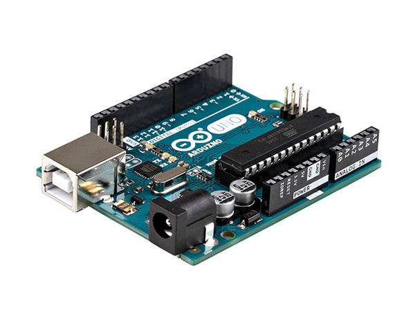

Creat și proiectat de Google, Materialize este un limbaj de design care combină principiile clasice de design de succes, împreună cu inovația și tehnologia. Scopul Google este de a dezvolta un sistem de design care permite o experiență de utilizator unificată în toate produsele lor pe orice platformă.
Metafora materialului definește relația dintre spațiu și mișcare. Ideea este că tehnologia este inspirată de hârtie și cerneală și este utilizată pentru a facilita creativitatea și inovarea. Suprafețele și muchiile oferă repere vizuale familiare, care permit utilizatorilor să înțeleagă rapid tehnologia dincolo de lumea fizică.
Elementele și componentele, cum ar fi rețelele, tipografia, culoarea și imaginile nu sunt numai vizual plăcute, dar, de asemenea, creeaza un sentiment de ierarhie, sens, și concentare. Accentul pe diferite acțiuni și componente creează un ghid vizual pentru utilizatori.
Viziteaza Site-ul Producatorului
Ubuntu este un sistem de operare bazat pe Linux pentru computerele personale, servere și netbook-uri. Rudă apropiată a sistemului de operare Debian GNU/Linux, Ubuntu este ușor de instalat și folosit, des actualizat și neîngrădit de restricții legale. Ubuntu este sponsorizat de Canonical Ltd., o companie privată fondată de antreprenorul sud-african Mark Shuttleworth.
Numele sistemului de operare provine din limba zulusă, unde „ubuntu” este o ideologie ce poate fi definită pe scurt drept „credința într-o legatură universală ce unește întreaga omenire”. Sloganul adoptat, „Linux pentru ființe umane” încorporează unul din scopurile declarate ale proiectului, acela de a face din Linux un sistem de operare popular și ușor de folosit. Cea mai recentă versiune Ubuntu este 16.04.
Ubuntu folosește mediul de lucru Unity, al cărui scop este să ofere o interfață gratuită, simplă și intuitivă, dar în același timp și o pleiadă de aplicații și programe moderne. Suita de birou Libre Office, navigatorul web Mozilla Firefox și editorul grafic Gimp sunt câteva din programele distribuite implicit.
După instalarea sistemului de operare, utilizatorul este întâmpinat de un spațiu de lucru fără pictograme, în care culorile portocaliu și maro sunt predominante. Programele de uz general sunt instalate în meniul „Aplicații”. Locațiile importante și cele mai des frecventate sunt grupate în meniul „Places”. Modificarea parametrilor de funcționare se poate face cu ușurință din meniul „System”. Ferestrele deschise pot fi vizualizate în bara din josul ecranului.
Ubuntu este localizat în peste 40 de limbi, inclusiv limba română. Utilizatorii se pot folosi de unealta de traducere Rosetta pentru a contribui corecturi și/sau traduceri noi.
Din dorința de a-l face mai ușor de folosit, dezvoltatorii au pus accent pe folosirea comenzii sudo. Această comandă permite utilizatorilor să îndeplinească sarcini administrative fără a iniția o sesiune cu drepturi administrative.
Viziteaza Site-ul Producatorului
Arduino este o companie open-source care produce atât plăcuțe de dezvoltare bazate pe microcontrolere, cât și partea de software destinată funcționării și programării acestora. Pe lângă acestea include și o comunitate uriașă care se ocupă cu creația și distribuirea de proiecte care au ca scop crearea de dispozitive care pot sesiza și controla diverse activități sau procese în lumea reală.[1] Proiectul este bazat pe designul plăcilor cu microcontroler produse de câțiva furnizori, folosind diverse tipuri de microcontrolere. Aceste plăci pun la dispoziția utilizatorului pini I/O, digitali și analogici, care pot fi interfațați cu o gamă largă de plăcuțe numite scuturi (shield-uri) și/sau cu alte circuite. Plăcile au interfețe de comunicații seriale, inclusiv USB pe unele modele, pentru a încărca programe din calculatorele personale. Pentru programarea microcontrolerelor, Arduino vine cu un mediu de dezvoltare integrat (IDE) bazat pe proiectul Processing, care include suport pentru limbaje de programare ca C și C++.

Arduino UNO este o platforma de procesare open-source, bazata pe software si hardware flexibil si simplu de folosit. Consta intr-o platforma de mici dimensiuni (6.8 cm / 5.3 cm – in cea mai des intalnita varianta) construita in jurul unui procesor de semnal si este capabila de a prelua date din mediul inconjurator printr-o serie de senzori si de a efectua actiuni asupra mediului prin intermediul luminilor, motoarelor, servomotoare, si alte tipuri de dispozitive mecanice. Procesorul este capabil sa ruleze cod scris intr-un limbaj de programare care este foarte similar cu limbajul C++.
Placa Arduino UNO se conecteaza la portul USB al calculatorului folosind un cablu de tip USB A-B, disponibil in varianta de 1.5 metri sau de 3 metri. Poate fi alimentata extern (din priza) folosind un alimentator extern. Alimentarea externa este necesara in situatia in care consumatorii conectati la placa necesita un curent mai mare de cateva sute de miliamperi. In caz contrar, placa se poate alimenta direct din PC, prin cablul USB. Pachetul contine doar placa Arduino, si nu si cablul USB sau alimentatorul extern (este necesar sa le comanzi separat, daca doresti).
Viziteaza Site-ul Producatorului